Know what every sale really earns. Cost, margin and margin % are stored on each order line, analysed in pivot, graph and list views, and delivered as a modern PDF and a multi-sheet Excel workbook, with the cost taken from the product or from the real inventory valuation.
Odoo’s standard margin (the Margins app) gives a quick estimate on the order. Finance and sales managers need more: a cost that follows what was really delivered, ratios that stay correct when grouped, and reports that can be sent to management as they are.
All screenshots use demo data: 15 confirmed sales orders with 51 lines and one quotation, a US-dollar company with some orders in euros, and the Inventory Valuation cost basis. Order S00015 is partly delivered and shows every margin band.
Two entries are added under Sales › Reporting › Margin Analytics: Margin Analysis (pivot, graph and list) and Margin Report (PDF / Excel). Both are visible to the Sales Margin Analytics group only.
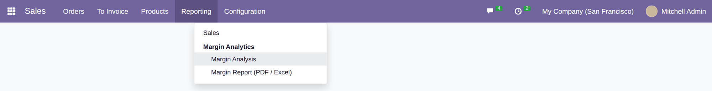
Each line shows Unit Cost, Margin and Margin (%) next to the subtotal, in the order currency. Margin is the untaxed subtotal after discount minus cost, so taxes never distort it. The rate turns red when negative and green from 30%. Sections, notes and down-payment lines are left out.
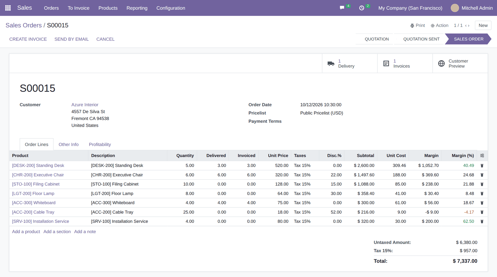
Use the column selector to add Total Cost and Cost Basis. The basis tells you how each line was costed: Standard Cost, Actual + Standard (delivered part at actual cost, open part at the snapshot) or Actual (Valuation).
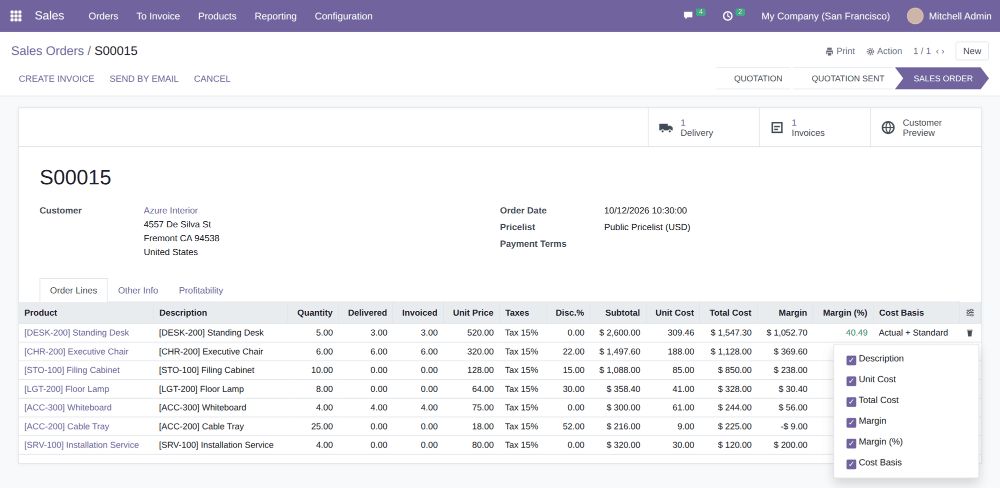
Revenue (untaxed), total cost, margin and a weighted margin % for the whole order (total margin divided by total untaxed revenue). Refresh Standard Costs re-captures the product cost for lines that are not delivered yet, and is hidden on locked or cancelled orders.
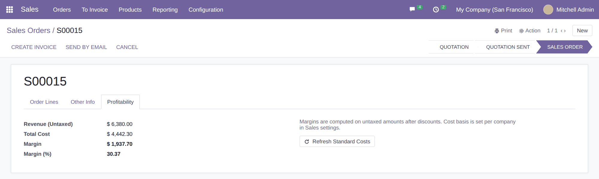
Add Margin (with a total) and Margin (%) to the Sales Orders list (and to Quotations) to rank orders at a glance.
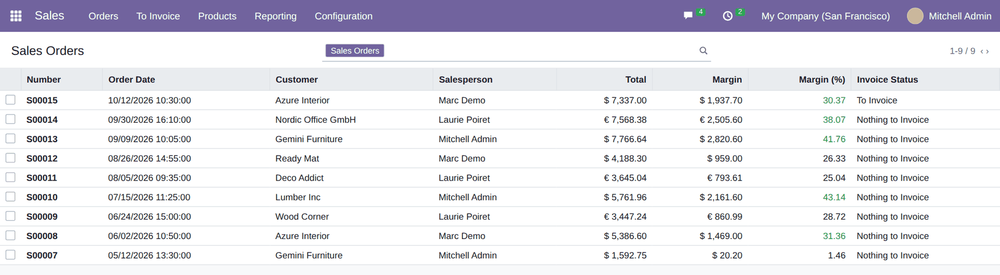
In Sales › Settings › Margin Analytics pick Standard Cost (snapshot at order time) or Inventory Valuation (delivered quantities at the real FIFO / AVCO cost, returns netted, open quantities at the snapshot). The snapshot is frozen when the product is chosen, so later cost changes never rewrite the margin of past orders.
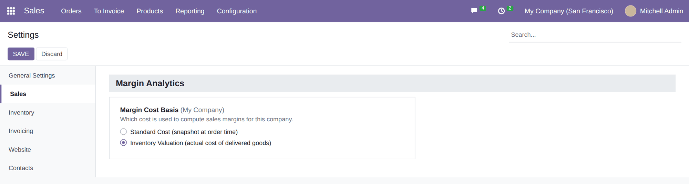
| Line | Costed as | Standard basis | Valuation basis |
|---|---|---|---|
| Executive Chair 6 ordered, 6 delivered | Actual (Valuation) | $ 417.60 · 27.88% | $ 369.60 · 24.68% |
| Standing Desk 5 ordered, 3 delivered | Actual + Standard | $ 1,050.00 · 40.38% | $ 1,052.70 · 40.49% |
| Filing Cabinet 10 ordered, 0 delivered | Standard Cost | $ 238.00 · 21.88% | $ 238.00 · 21.88% |
Rows by month and columns by sales team by default, with Revenue (Untaxed), Total Cost, Margin and Margin (%). Margin %, discount %, unit price and unit cost are recomputed from their totals in every cell, never averaged, so Total rows are always right. All amounts are in the company currency, converted at each order’s own rate. Cancelled orders, sections, notes and down payments are excluded.
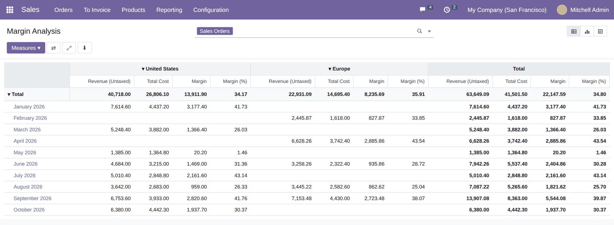
The same data as a bar chart (margin by month by default). Change the measure, the grouping or the chart type like in any Odoo report.
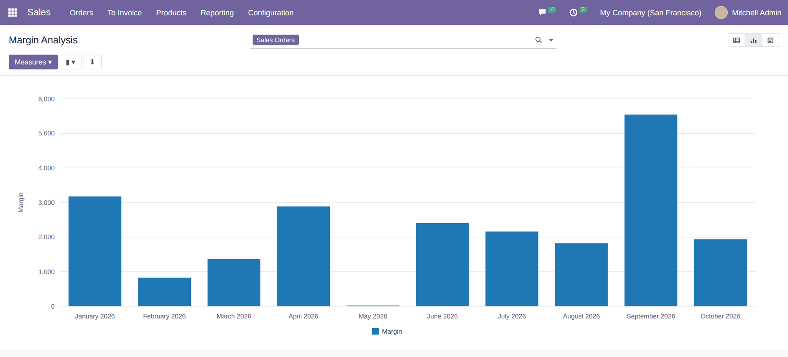
One row per order line with unit price, discount, unit cost, revenue, cost, margin and margin %. Rows are coloured by band: red below 0%, orange from 0% to 10%, green from 30%. Totals are shown in the footer. Extra columns (team, category, taxes, delivered quantity, delivered margin, cost basis, order currency) can be added from the selector.
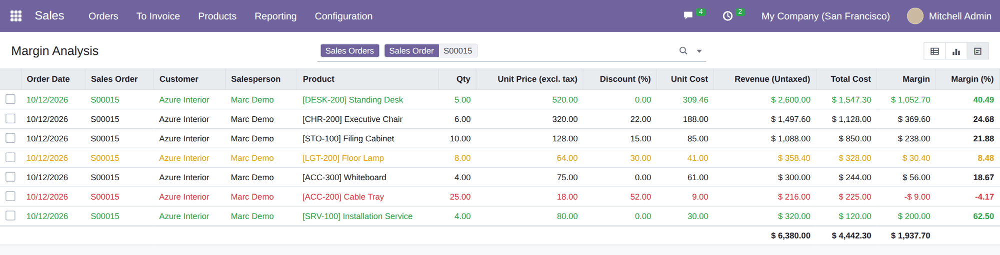
Filter by Loss-Making (< 0%), Low Margin (0–10%), Standard Margin (10–30%), High Margin (≥ 30%), Discounted Lines or Actual Cost (Valuation), on confirmed orders or quotations. Group by customer, team, salesperson, product category, product, order, cost basis or order date. Searching a category includes its sub-categories.
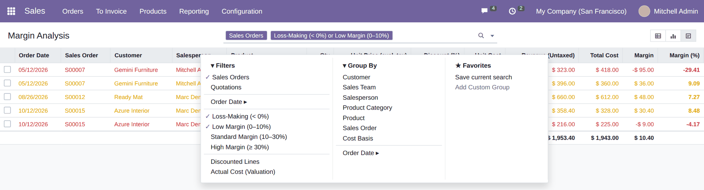
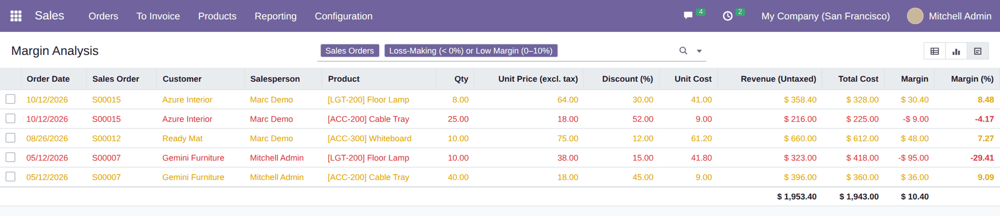
Choose the period (in your time zone), the scope (confirmed orders, or quotations and orders), the grouping (order, customer, salesperson, team, category or product) and whether to print line details. Narrow the data by customers, teams, salespersons, categories, products and orders.
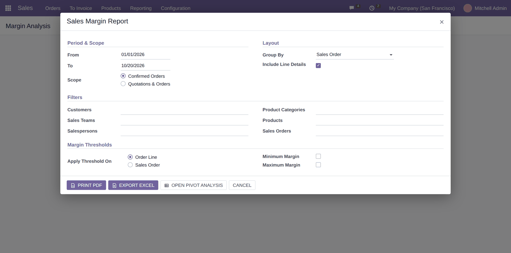
Tick Minimum Margin and / or Maximum Margin and decide whether the rule applies to each order line or to the weighted margin of the whole order. The wizard blocks an end date before the start date and a minimum above the maximum, and tells you when nothing matches. Open Pivot Analysis opens the same selection in the analysis views.
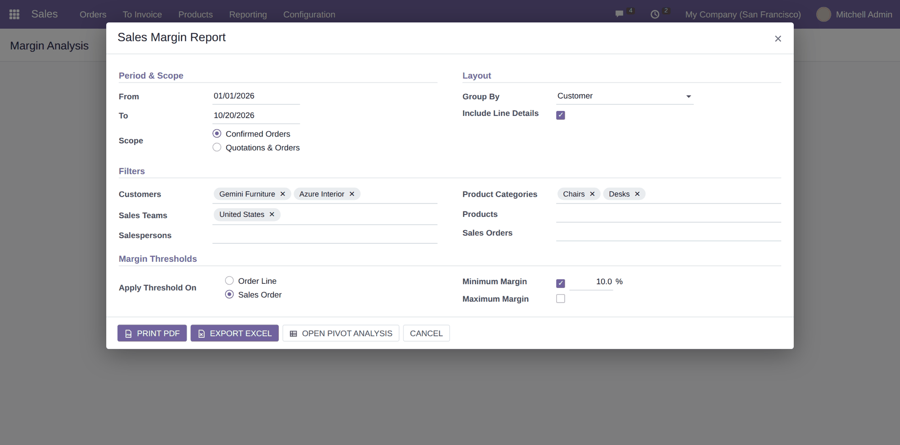
Select orders in the list, then Action › Margin Report. The wizard opens with those orders, no date limits and quotations included. The action is only offered to the Sales Margin Analytics group.
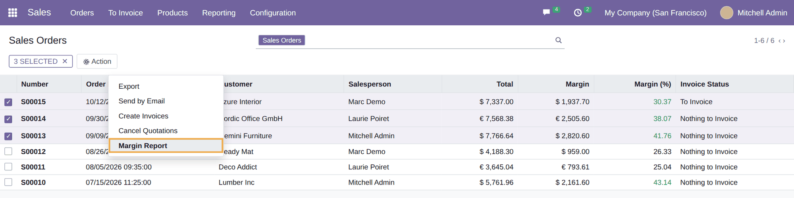
A4 landscape. KPI cards (revenue, cost, margin, margin rate, volume), a margin-health bar showing the share of revenue per band, a ranking by the chosen grouping with contribution bars, then grouped line details with coloured margin pills, subtotals, a grand-total band and “Page X of Y”. Lines costed from valuation are labelled.
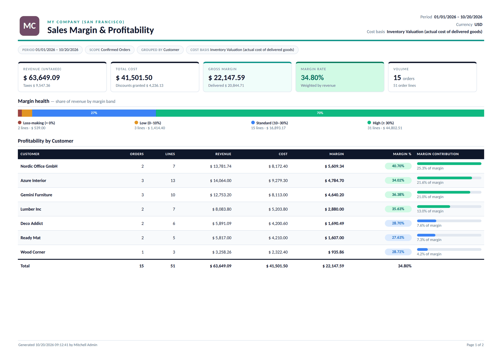
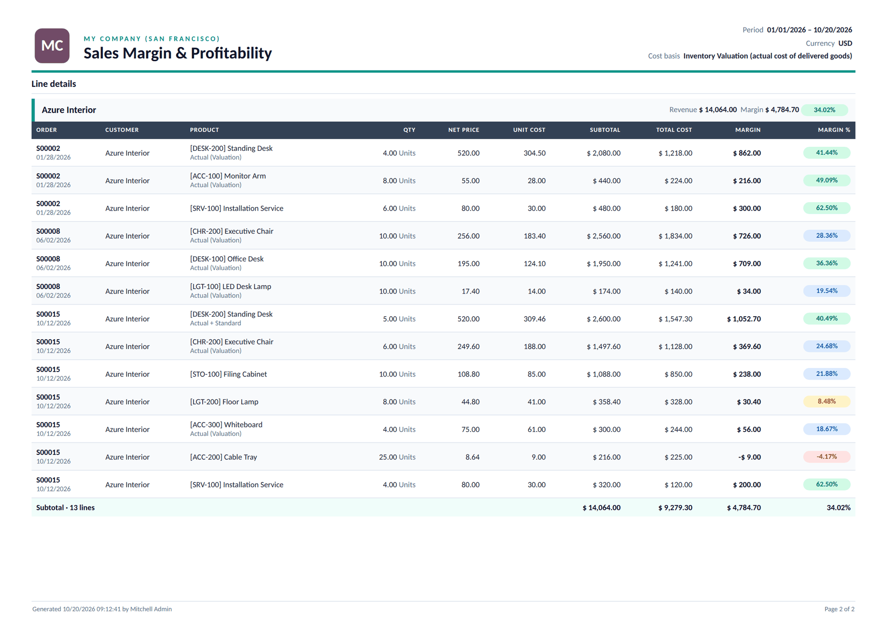
Three sheets, built without any Odoo add-on: Summary (KPI tiles, parameters, margin bands, ranking and a combined margin / margin % chart), Report (grouped like the PDF with collapsible lines and live SUBTOTAL formulas) and Data (one row per line, auto-filter, filter-aware totals, conditional formatting and data bars), ready for pivot tables or Power BI.
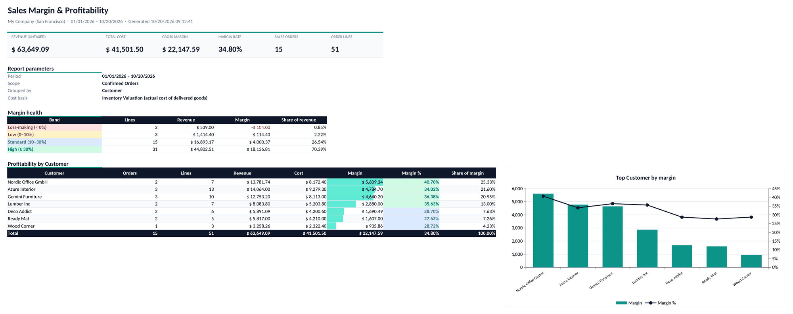
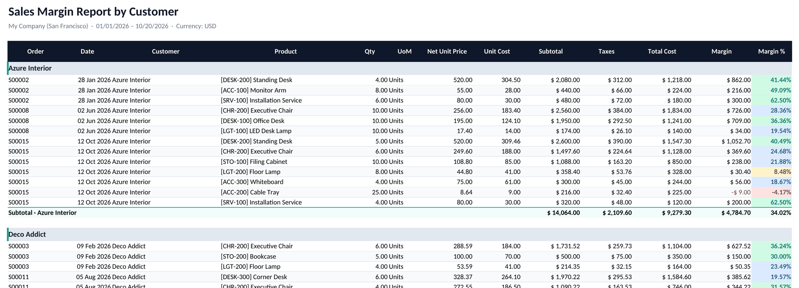
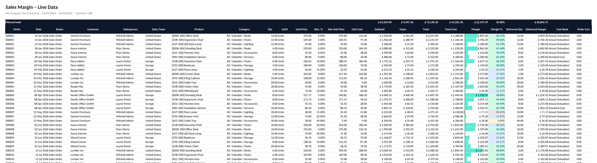
The same four bands drive the list colours, the filters, the PDF health bar and the Excel conditional formatting.
| Who | Sees |
|---|---|
| Sales Margin Analytics group | The margin menus, cost and margin columns on orders, the analysis model and the report wizard. Included automatically for Sales / Administrator. |
| Sales User: Own Documents Only | Only their own and unassigned orders in the analysis. |
| Sales User: All Documents and managers | Every order of the allowed companies. |
| Multi-company | A global record rule limits the analysis to the user’s companies, and the wizard refuses orders from another company. |
| Odoo version | 19.0, Community and Enterprise |
| Depends on | sale_management, sale_stock, stock_account |
| Python dependency | xlsxwriter (for the Excel export) |
| Menus | Sales › Reporting › Margin Analytics › Margin Analysis / Margin Report (PDF / Excel) |
| Settings | Sales › Settings › Margin Analytics › Margin Cost Basis |
| Models | sale.margin.report (read-only SQL model), sale.margin.report.wizard. New fields on orders and lines are prefixed sma_. |
| Automated tests | 29 tests: full and partial deliveries (standard and valuation), discounts, odd precision, tax excluded and included, multi-currency, units of measure, zero price, snapshot freezing, weighted pivot ratios, record rules, thresholds, PDF and Excel rendering |
| License | LGPL-3 |
Questions, a demo, or a margin report adapted to your own process? Get in touch.
✉ ibrahim.yahiah@gmail.com LinkedIn: Ibrahim YahiaAuthor: Ibrahim Yahia · License: LGPL-3